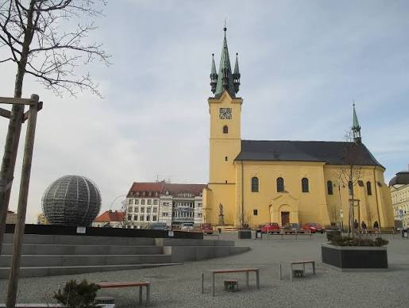

V Příbrami začíná rekonstrukce náměstí T. G. Masaryka
Publikováno: 12. října 2026

Dlouho očekávaná oprava historického centra města Příbram byla dnes oficiálně zahájena. Stavební práce podle vyjádření radnice potrvají několik měsíců a přinesou s sebou dopravní omezení.
Cílem projektu je modernizace veřejného prostoru, obnova zeleně a vytvoření nových parkovacích míst pro obyvatele i návštěvníky Příbrami.